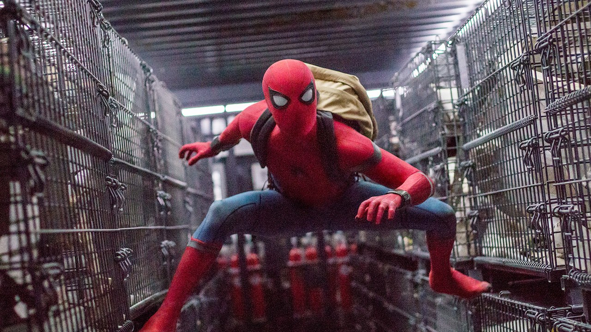

Tom Holland sebagai Peter Parker / Spider-Man adalah salah satu pahlawan super fiksi Marvel. Tokoh ini diciptakan Stan Lee dan Steve Ditko dan pertama kali muncul pada komik Amazing Fantasy #15 di tahun 1962. Spider-Man sebenarnya adalah sosok pemuda bernama Peter Paker yang mendapat kekuatan setelah digigit laba-laba percobaan.
Peter Benjamin Parker atau biasa disebut Peter Parker adalah seorang pemuda yang berasal dari Forest Hill, New York City. Ayahnya adalah seorang ilmuan jenius yang bernama Richard Paker sementara ibunya adalah bernama Mary. Diumur 7 tahun, Peter dititipkan pada pamannya Ben Parker dan setelah itu kedua orang tuanya meninggal akibat kecelakaan pesawat. Selanjutnya Peter di besarkan oleh paman dan bibinya May yang juga bekerja sebagai perawat. Ia pun tumbuh menjadi pemuda yang cerdas.
Saat Peter duduk di bangku SMA, ia mengalami kecelakaan yakni digigit laba-laba radioaktif saat sedang berkunjung di Oscorp (perusahaan teknologi). Sejak kejadiaan itu Peter memiliki kemampuan super layaknya seekor laba-laba. Awalnya Peter menggunakan kemampuanya untuk menangkap pembunuh pamannya yang tewas ditembak perampok, namun karena maraknya tindakan kriminal di New York, Peter pun mencoba membasmi kejahatan dengan identitas barunya yakni Spider-Man sambil mengumpulkan informasi tentang pembunuh pamannya.
Sebagai Spider-Man, Peter Parker memiliki banyak kemampuan. Ia memiliki insting panca indra yang luar biasa. selain itu Spider-Man dapat merayap ditembok dan atap layaknya laba-laba. Spider-Man juga memiliki "Web Shooter" yang berfungsi untuk mengeluarkan jaring. Tubuh Spider-Man juga luar biasa karena bisa menyembuhkan diri dari luka yang ia terima dengan cepat.
Karena masih muda, kadang kala Peter tak bisa mengontrol tindakannya. Tindakan tersebut membuat direktur S.H.I.E.L.D, Nick Fury selalu mengontrolnya dan memasukkannya dalam anggota The Avengers.